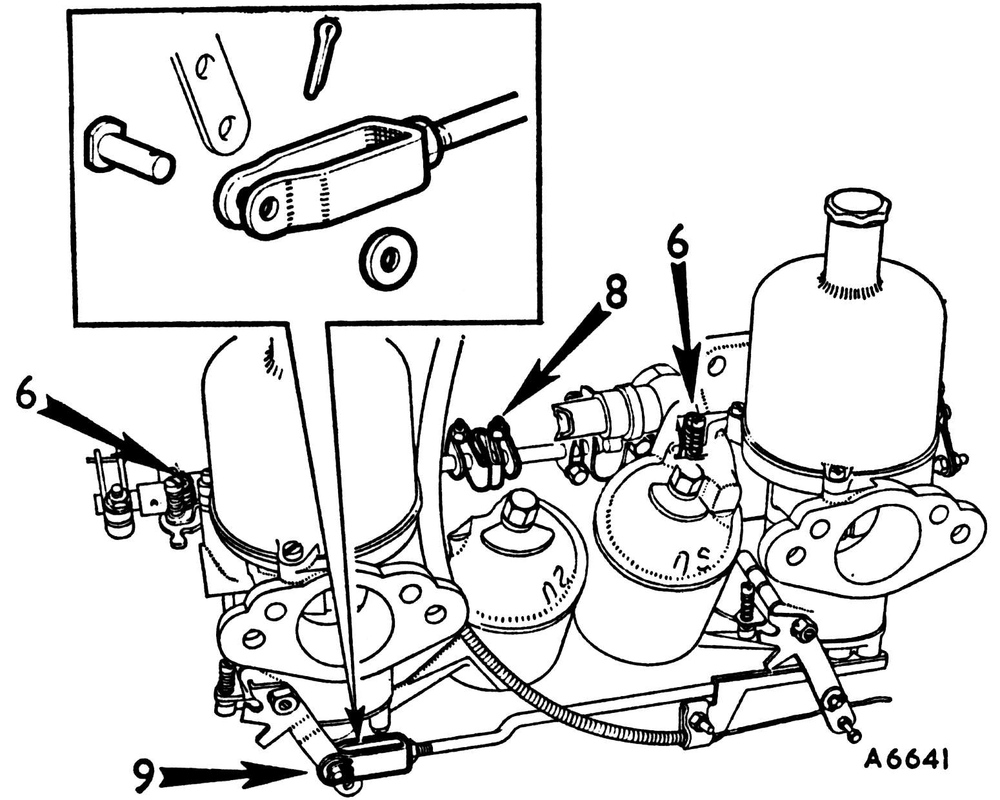
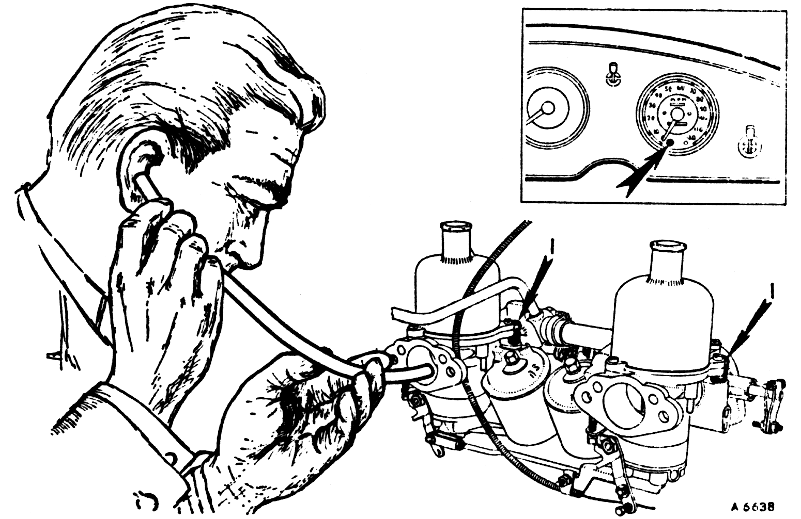
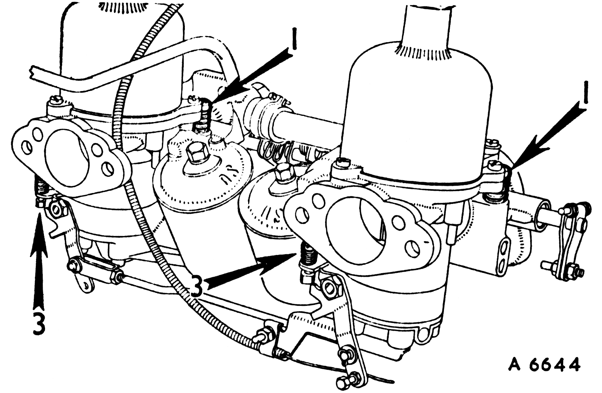
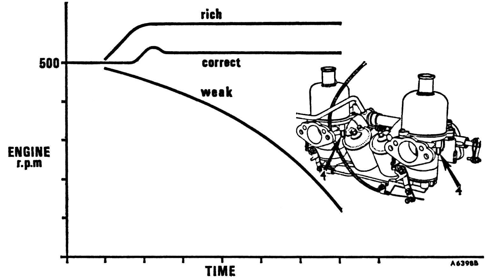
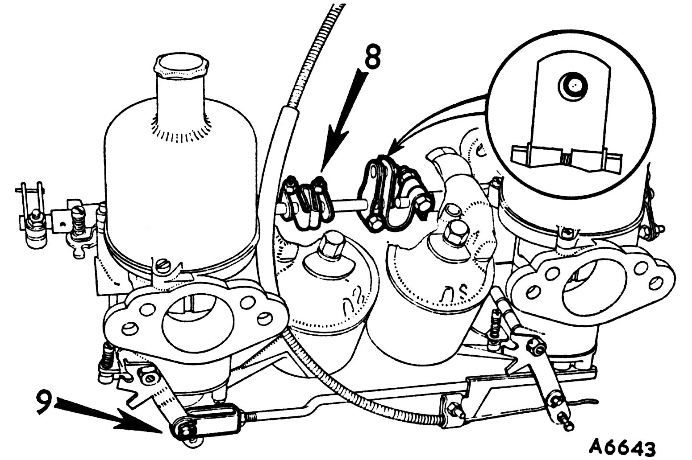

Multi-carburetters
Multi-carburetter installations cannot be successfully tuned unless the tappets, points, and plugs are correctly adjusted.
Remove the cleaners and carry out item 1, 2, and 3 on each carburetter.

9
Note
Whenever the throttle adjusting screws (6) are fitted they, and not the slow-running valves, must be used to adjust the idling speed. Screw down the slow-running valves (which must remain closed) and set the throttle adjusting screws (6) 1-1/2 turns open. In items 10, and 11, adjust the idling speed with the throttle adjusting screws.
- Slacken a clamping bolt (8) on one of the throttle spindle interconnection couplings between the carburetters.
- Disconnect the jet control interconnecting rod at the forked end (9).

10
- Restart the engine and turn the slow-running valve (1), or throttle adjusting screws, an equal amount on each carburetter to give the desired idling speed as indicated by the glow of the ignition warning light.
- Compare the intensity of the intake hiss on all carburetters and alter the slow-running valves (1), or throttle adjusting screws, until the hiss is the same.
|
|

11
- Turn the jet adjusting screw (3) an equal amount on all carburetters, up to weaken or down to enrich, until the fastest idling speed consistent with even running is obtained.
- Re-adjust the slow-running valves (1), if necessary.

12
- Check the mixture by raising the lifting pin (4) of the front carburetter 1/32 in. (1 mm.) after free movement has been taken up. The graph illustrates the possible effect on engine r.p.m.
- Repeat the operation on the other carburetter(s) and after adjustment re-check as the carburetters are interdependent.
- Item 5 shows the effect of mixture on the exhaust smoke.

13
- Tighten the clamp bolt (8) of the throttle spindle interconnections with the pin of the link pin lever resting against the edge of the pick-up lever hole (see inset). This provides the correct delay in opening the front carburetter throttle.
When a forked lever is fitted, set the lever so that the pin is .006 in. (.15 mm.) from the lower edge of the fork.
- Reconnect the jet control linkage (9) so that the jet operating arms move simultaneously; if necessary, turn the fork end(s).
|